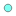
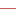

<!doctype html>
<html lang="en">
    <head>
        <meta charset="utf-8">
        <meta http-equiv="X-UA-Compatible" content="IE=edge">
        <meta name="viewport" content="initial-scale=1,user-scalable=no,maximum-scale=1,width=device-width">
        <meta name="mobile-web-app-capable" content="yes">
        <meta name="apple-mobile-web-app-capable" content="yes">
        <link rel="stylesheet" href="css/leaflet.css">
        <link rel="stylesheet" href="css/qgis2web.css"><link rel="stylesheet" href="css/fontawesome-all.min.css">
        <style>
        #map {
            width: 622px;
            height: 1126px;
        }
        </style>
        <title></title>
    </head>
    <body>
        <div id="map">
        </div>
        <script src="js/qgis2web_expressions.js"></script>
        <script src="js/leaflet.js"></script>
        <script src="js/leaflet.rotatedMarker.js"></script>
        <script src="js/leaflet.pattern.js"></script>
        <script src="js/leaflet-hash.js"></script>
        <script src="js/Autolinker.min.js"></script>
        <script src="js/rbush.min.js"></script>
        <script src="js/labelgun.min.js"></script>
        <script src="js/labels.js"></script>
        <script src="data/CruiseShipPaths2019_1.js"></script>
        <script src="data/CruiseShipPaths2018_2.js"></script>
        <script src="data/CruiseShipPaths2017_3.js"></script>
        <script src="data/SpermWhaleSightings20052018_4.js"></script>
        <script>
        var highlightLayer;
        function highlightFeature(e) {
            highlightLayer = e.target;

            if (e.target.feature.geometry.type === 'LineString') {
              highlightLayer.setStyle({
                color: '#ffff00',
              });
            } else {
              highlightLayer.setStyle({
                fillColor: '#ffff00',
                fillOpacity: 1
              });
            }
        }
        var map = L.map('map', {
            zoomControl:true, maxZoom:28, minZoom:1
        })
        var hash = new L.Hash(map);
        map.attributionControl.setPrefix('<a href="https://github.com/tomchadwin/qgis2web" target="_blank">qgis2web</a> &middot; <a href="https://leafletjs.com" title="A JS library for interactive maps">Leaflet</a> &middot; <a href="https://qgis.org">QGIS</a>');
        var bounds_group = new L.featureGroup([]);
        function setBounds() {
            if (bounds_group.getLayers().length) {
                map.fitBounds(bounds_group.getBounds());
            }
        }
        var layer_ESRINationalGeographic_0 = L.tileLayer('http://services.arcgisonline.com/ArcGIS/rest/services/NatGeo_World_Map/MapServer/tile/{z}/{y}/{x}', {
            opacity: 1.0,
            attribution: '',
            minZoom: 1,
            maxZoom: 28,
            minNativeZoom: 0,
            maxNativeZoom: 20
        });
        layer_ESRINationalGeographic_0;
        map.addLayer(layer_ESRINationalGeographic_0);
        function pop_CruiseShipPaths2019_1(feature, layer) {
            layer.on({
                mouseout: function(e) {
                    for (i in e.target._eventParents) {
                        e.target._eventParents[i].resetStyle(e.target);
                    }
                },
                mouseover: highlightFeature,
            });
            var popupContent = '<table>\
                    <tr>\
                        <th scope="row">MMSI</th>\
                        <td>' + (feature.properties['MMSI'] !== null ? Autolinker.link(String(feature.properties['MMSI'])) : '') + '</td>\
                    </tr>\
                    <tr>\
                        <th scope="row">begin</th>\
                        <td>' + (feature.properties['begin'] !== null ? Autolinker.link(String(feature.properties['begin'])) : '') + '</td>\
                    </tr>\
                    <tr>\
                        <th scope="row">end</th>\
                        <td>' + (feature.properties['end'] !== null ? Autolinker.link(String(feature.properties['end'])) : '') + '</td>\
                    </tr>\
                </table>';
            layer.bindPopup(popupContent, {maxHeight: 400});
        }

        function style_CruiseShipPaths2019_1_0() {
            return {
                pane: 'pane_CruiseShipPaths2019_1',
                opacity: 1,
                color: 'rgba(196,92,92,1.0)',
                dashArray: '',
                lineCap: 'square',
                lineJoin: 'bevel',
                weight: 1.0,
                fillOpacity: 0,
                interactive: true,
            }
        }
        map.createPane('pane_CruiseShipPaths2019_1');
        map.getPane('pane_CruiseShipPaths2019_1').style.zIndex = 401;
        map.getPane('pane_CruiseShipPaths2019_1').style['mix-blend-mode'] = 'normal';
        var layer_CruiseShipPaths2019_1 = new L.geoJson(json_CruiseShipPaths2019_1, {
            attribution: '',
            interactive: true,
            dataVar: 'json_CruiseShipPaths2019_1',
            layerName: 'layer_CruiseShipPaths2019_1',
            pane: 'pane_CruiseShipPaths2019_1',
            onEachFeature: pop_CruiseShipPaths2019_1,
            style: style_CruiseShipPaths2019_1_0,
        });
        bounds_group.addLayer(layer_CruiseShipPaths2019_1);
        map.addLayer(layer_CruiseShipPaths2019_1);
        function pop_CruiseShipPaths2018_2(feature, layer) {
            layer.on({
                mouseout: function(e) {
                    for (i in e.target._eventParents) {
                        e.target._eventParents[i].resetStyle(e.target);
                    }
                },
                mouseover: highlightFeature,
            });
            var popupContent = '<table>\
                    <tr>\
                        <th scope="row">MMSI</th>\
                        <td>' + (feature.properties['MMSI'] !== null ? Autolinker.link(String(feature.properties['MMSI'])) : '') + '</td>\
                    </tr>\
                    <tr>\
                        <th scope="row">begin</th>\
                        <td>' + (feature.properties['begin'] !== null ? Autolinker.link(String(feature.properties['begin'])) : '') + '</td>\
                    </tr>\
                    <tr>\
                        <th scope="row">end</th>\
                        <td>' + (feature.properties['end'] !== null ? Autolinker.link(String(feature.properties['end'])) : '') + '</td>\
                    </tr>\
                </table>';
            layer.bindPopup(popupContent, {maxHeight: 400});
        }

        function style_CruiseShipPaths2018_2_0() {
            return {
                pane: 'pane_CruiseShipPaths2018_2',
                opacity: 1,
                color: 'rgba(229,141,68,1.0)',
                dashArray: '',
                lineCap: 'square',
                lineJoin: 'bevel',
                weight: 1.0,
                fillOpacity: 0,
                interactive: true,
            }
        }
        map.createPane('pane_CruiseShipPaths2018_2');
        map.getPane('pane_CruiseShipPaths2018_2').style.zIndex = 402;
        map.getPane('pane_CruiseShipPaths2018_2').style['mix-blend-mode'] = 'normal';
        var layer_CruiseShipPaths2018_2 = new L.geoJson(json_CruiseShipPaths2018_2, {
            attribution: '',
            interactive: true,
            dataVar: 'json_CruiseShipPaths2018_2',
            layerName: 'layer_CruiseShipPaths2018_2',
            pane: 'pane_CruiseShipPaths2018_2',
            onEachFeature: pop_CruiseShipPaths2018_2,
            style: style_CruiseShipPaths2018_2_0,
        });
        bounds_group.addLayer(layer_CruiseShipPaths2018_2);
        map.addLayer(layer_CruiseShipPaths2018_2);
        function pop_CruiseShipPaths2017_3(feature, layer) {
            layer.on({
                mouseout: function(e) {
                    for (i in e.target._eventParents) {
                        e.target._eventParents[i].resetStyle(e.target);
                    }
                },
                mouseover: highlightFeature,
            });
            var popupContent = '<table>\
                    <tr>\
                        <th scope="row">MMSI</th>\
                        <td>' + (feature.properties['MMSI'] !== null ? Autolinker.link(String(feature.properties['MMSI'])) : '') + '</td>\
                    </tr>\
                    <tr>\
                        <th scope="row">begin</th>\
                        <td>' + (feature.properties['begin'] !== null ? Autolinker.link(String(feature.properties['begin'])) : '') + '</td>\
                    </tr>\
                    <tr>\
                        <th scope="row">end</th>\
                        <td>' + (feature.properties['end'] !== null ? Autolinker.link(String(feature.properties['end'])) : '') + '</td>\
                    </tr>\
                </table>';
            layer.bindPopup(popupContent, {maxHeight: 400});
        }

        function style_CruiseShipPaths2017_3_0() {
            return {
                pane: 'pane_CruiseShipPaths2017_3',
                opacity: 1,
                color: 'rgba(207,113,199,1.0)',
                dashArray: '',
                lineCap: 'square',
                lineJoin: 'bevel',
                weight: 1.0,
                fillOpacity: 0,
                interactive: true,
            }
        }
        map.createPane('pane_CruiseShipPaths2017_3');
        map.getPane('pane_CruiseShipPaths2017_3').style.zIndex = 403;
        map.getPane('pane_CruiseShipPaths2017_3').style['mix-blend-mode'] = 'normal';
        var layer_CruiseShipPaths2017_3 = new L.geoJson(json_CruiseShipPaths2017_3, {
            attribution: '',
            interactive: true,
            dataVar: 'json_CruiseShipPaths2017_3',
            layerName: 'layer_CruiseShipPaths2017_3',
            pane: 'pane_CruiseShipPaths2017_3',
            onEachFeature: pop_CruiseShipPaths2017_3,
            style: style_CruiseShipPaths2017_3_0,
        });
        bounds_group.addLayer(layer_CruiseShipPaths2017_3);
        map.addLayer(layer_CruiseShipPaths2017_3);
        function pop_SpermWhaleSightings20052018_4(feature, layer) {
            layer.on({
                mouseout: function(e) {
                    for (i in e.target._eventParents) {
                        e.target._eventParents[i].resetStyle(e.target);
                    }
                },
                mouseover: highlightFeature,
            });
            var popupContent = '<table>\
                    <tr>\
                        <th scope="row">species</th>\
                        <td>' + (feature.properties['species'] !== null ? Autolinker.link(String(feature.properties['species'])) : '') + '</td>\
                    </tr>\
                    <tr>\
                        <th scope="row">long</th>\
                        <td>' + (feature.properties['long'] !== null ? Autolinker.link(String(feature.properties['long'])) : '') + '</td>\
                    </tr>\
                    <tr>\
                        <th scope="row">lat</th>\
                        <td>' + (feature.properties['lat'] !== null ? Autolinker.link(String(feature.properties['lat'])) : '') + '</td>\
                    </tr>\
                </table>';
            layer.bindPopup(popupContent, {maxHeight: 400});
        }

        function style_SpermWhaleSightings20052018_4_0() {
            return {
                pane: 'pane_SpermWhaleSightings20052018_4',
                radius: 4.0,
                opacity: 1,
                color: 'rgba(35,35,35,1.0)',
                dashArray: '',
                lineCap: 'butt',
                lineJoin: 'miter',
                weight: 1,
                fill: true,
                fillOpacity: 1,
                fillColor: 'rgba(0,255,234,1.0)',
                interactive: true,
            }
        }
        map.createPane('pane_SpermWhaleSightings20052018_4');
        map.getPane('pane_SpermWhaleSightings20052018_4').style.zIndex = 404;
        map.getPane('pane_SpermWhaleSightings20052018_4').style['mix-blend-mode'] = 'normal';
        var layer_SpermWhaleSightings20052018_4 = new L.geoJson(json_SpermWhaleSightings20052018_4, {
            attribution: '',
            interactive: true,
            dataVar: 'json_SpermWhaleSightings20052018_4',
            layerName: 'layer_SpermWhaleSightings20052018_4',
            pane: 'pane_SpermWhaleSightings20052018_4',
            onEachFeature: pop_SpermWhaleSightings20052018_4,
            pointToLayer: function (feature, latlng) {
                var context = {
                    feature: feature,
                    variables: {}
                };
                return L.circleMarker(latlng, style_SpermWhaleSightings20052018_4_0(feature));
            },
        });
        bounds_group.addLayer(layer_SpermWhaleSightings20052018_4);
        map.addLayer(layer_SpermWhaleSightings20052018_4);
        var baseMaps = {};
        L.control.layers(baseMaps,{' Sperm Whale Sightings (2005-2018)': layer_SpermWhaleSightings20052018_4,' Cruise Ship Paths (2017)': layer_CruiseShipPaths2017_3,' Cruise Ship Paths (2018)': layer_CruiseShipPaths2018_2,' Cruise Ship Paths (2019)': layer_CruiseShipPaths2019_1,"ESRI National Geographic": layer_ESRINationalGeographic_0,},{collapsed:false}).addTo(map);
        setBounds();
        </script>
    </body>
</html>
